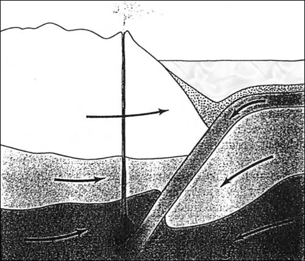
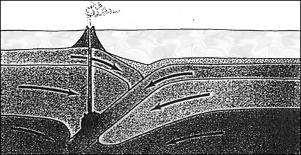
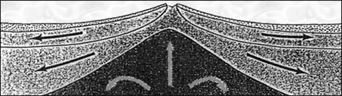
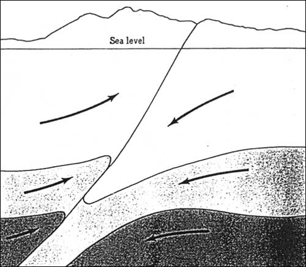
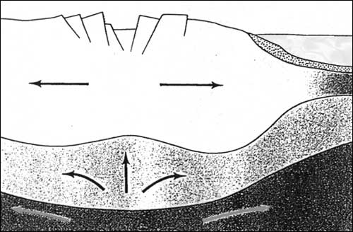

Ocean/Continent
Convergent boundary - Oceanic plate subducts under the continental
plate.
Landforms
- Ocean Trench, Young Mountains

Transforming boundary - Horizontal plate movement.
Landforms
- Faults
Ocean/Ocean
Convergent boundary - Subduction of one ocean plate under another.
Landforms
- Deep ocean trench, Volcanic Island Arcs

Divergent boundary - Occurs along the mid-oceanic ridge, where new
plates are constantly being formed from upwelling magma.
Landforms
- Mid-ocean ridge, Undersea volcanoes, black smokers.

Transforming boundary - Faults occur along the mid-ocean ridge when different
spreading rates occur.
Landforms
- Faults
Continent/Continent
Convergent boundary - Two continents collide and create the largest
mountains
Landforms - Mountains, No volcanoes!!

Divergent boundary - Continental rift valley

Transforming boundary - Transform Fault